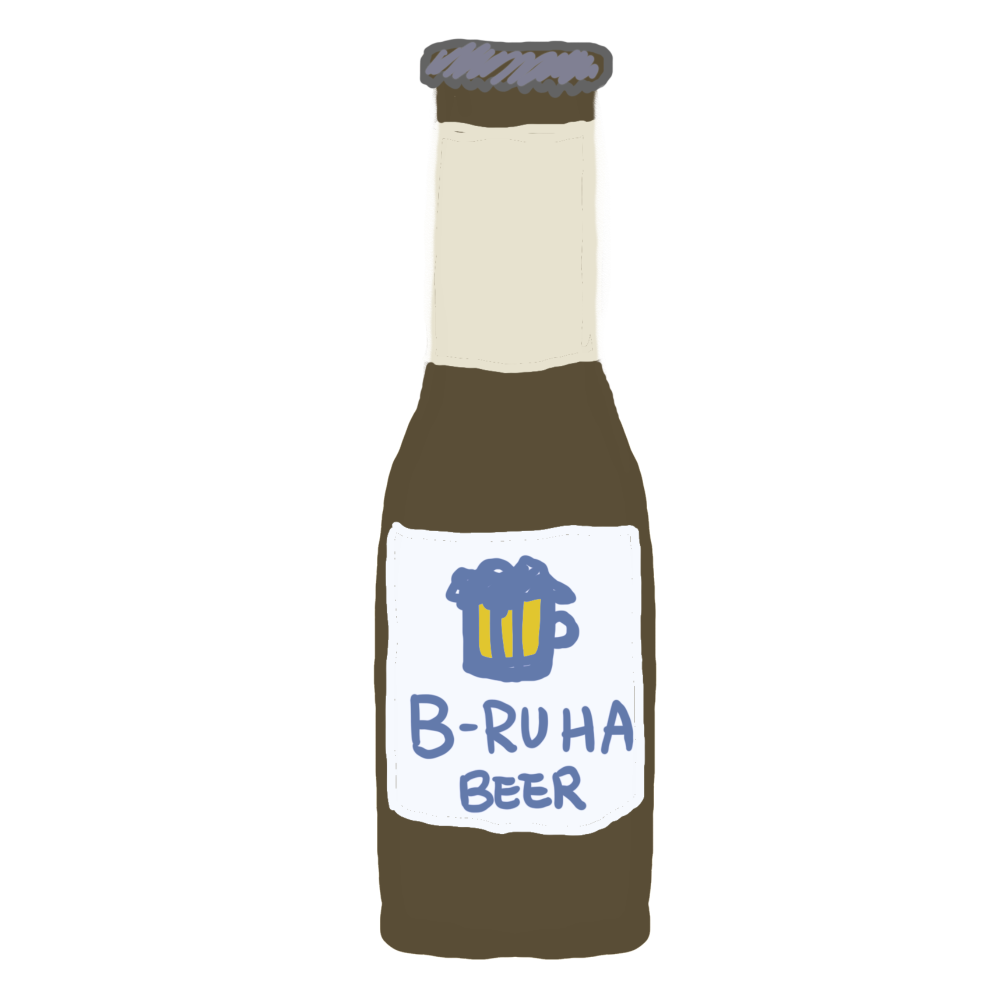
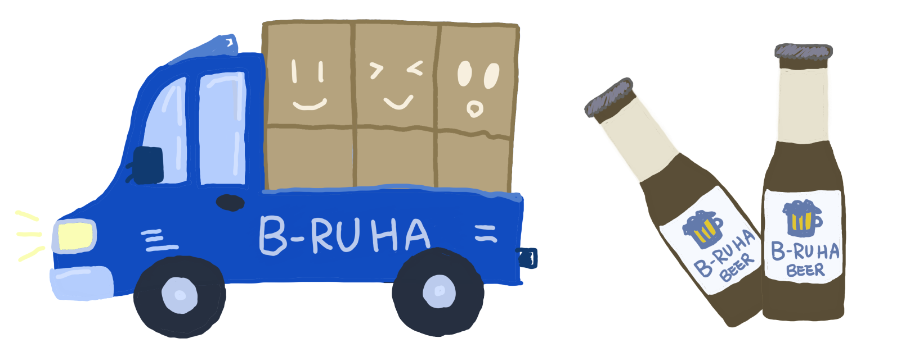

經過嚴格挑選和特殊處理，賦予啤酒深邃的芳香和豐富的麥芽風味。
「B-Ru Ha啤酒製所」 ，風靡台灣的品質釀酒之地。憑藉對啤酒的熱情與創新，我們以優質大麥和啤酒花精心釀製每滴清涼，呈現出風味豐富的啤酒系列。在這個獨特的製酒場所，我們以創意和品質為本，致力於打造獨具風味的啤酒系列。
以突破傳統的釀酒技藝著稱，不僅匯聚了專業的釀酒師團隊，更擁有獨特的釀造過程。我們的啤酒範疇豐富，從清爽的淺色啤酒到濃郁的黑啤，滿足各種口味需求。
透過激發品味的新奇體驗，將啤酒文化帶到更多生活中，無論是激情的啤迷還是初次嘗試者，我們都誠摯地邀請您共同品味這獨一無二的「B-Ru Ha」風格。
品質堅持 - 精湛工藝無妥協
我們堅信品質是「B-Ru Ha啤酒造所」的靈魂。從選材到釀製，我們以精湛的工藝和堅持嚴格的品質標準，確保每一瓶啤酒都是極致的味覺享受。我們絕不妥協於品質，為您呈現最純粹、最卓越的精釀啤酒。

創新堅持 - 啤酒文化的探險者
在「B-Ru Ha啤酒造所」，我們堅持不斷探索和創新。我們的釀酒師團隊勇於嘗試新的風味組合和釀造技術，帶來令人驚喜的啤酒口感。作為啤酒文化的前衛探險者，我們引領著精釀啤酒的演進。
在地堅持 - 擁抱當地風土人情
我們深深熱愛我們所處的社區，因此堅持與當地農夫和商家合作，將本地的風土元素融入啤酒製作中。這種本地堅持不僅令我們的啤酒獨具特色，也是對當地社區的愛和承諾。
「B-Ru Ha啤酒造所」的製作流程始於挑選上等大麥和啤酒花，經嚴格的磨碎、煮沸、加麥芽汁等步驟，形成麥汁。接著，添加酵母進行發酵，並進行陳釀過程，使啤酒風味逐漸豐富。最終，經過濾和裝瓶，呈現出清新、醇厚的極致風味。我們堅守優質原料，並以創新技術製作，為您帶來獨特的品味體驗。
經過嚴格挑選和特殊處理，賦予啤酒深邃的芳香和豐富的麥芽風味。

上精心培育而成的啤酒花，賦予啤酒獨特的花香和清新的苦味，如同陽光般照耀啤酒的每一滴。
選自天然泉水，是啤酒靈魂的來源，賦予清澈、純淨的水質，確保每一杯啤酒都蘊含著自然的恩賜。
由釀酒師秘密培育的酵母，帶來啤酒的獨特風味和香氣，是釀酒藝術中不可或缺的神秘元素。
我們做的第一件事是設計一個配方，設想製作過程的每個細節。為了利用所用輔助原料的特點，我們考慮了麥芽和啤酒花的種類、分佈以及輔助原料的添加時機。可以說這是啤酒的「藍圖」。
從藍圖所列出來的材料項目引進優質的原料，包括大麥、啤酒花、酵母和水，確保品質基礎。並做最好的保存，讓我們的原料可以在最佳狀態進行使用。
首先，我們先將磨碎成麥芽，這有助於提供釀造所需的醣類基礎。碾碎過程使大麥解構，促使後續的糖化過程，讓酵素更容易轉化澱粉為發酵所需的糖分。
這一步確保了麥芽中的養分能夠在後續的釀造過程中充分發揮作用，會影響啤酒的風味和口感的一個重要步驟。
將大麥中的澱粉糖化，過濾提取麥芽汁，將麥芽汁在100℃煮沸90分鐘以殺死細菌。接著，加入啤酒花後，除去不需要的固體，最後將酵母冷卻至20℃左右，使酵母發揮活性，準備完成。
將酵母加入麥汁中，最後進入發酵階段。酵母透過吃麥汁中的糖分來產生酒精和二氧化碳氣體。
釀酒師在發酵過程中控制溫度和 pH 值，所做的就是為酵母創造一個舒適的環境，使酵母發揮最好的功能。

剛完成發酵的啤酒被轉移到儲罐中，透過保持低溫，酵母和蛋白質會硬化並沉澱，使其更加清澈。透過這個過程，啤酒的苦澀味道會被淡化，創造出和諧的風味。
我們將釀造好的啤酒裝瓶和分裝小桶準備裝運，並以最溫和的方式掌握裝瓶的每一個細節。
我們將釀造好的啤酒裝瓶和分裝小桶準備裝運，並以最溫和的方式掌握裝瓶的每一個細節。
「B-Ru Ha啤酒造所」的釀酒師團隊是我們啤酒之魂的創作者，他們擁有獨特的品味視野和專業技藝，將創意注入每一滴啤酒的釀製中。憑藉多年的經驗和深厚的啤酒知識，我們的釀酒師將藉由獨特的釀造技巧打破傳統界限，呈現出令人驚艷的啤酒系列。他們對品質的堅持和對創新的追求，讓「B-Ru Ha啤酒造所」的每一瓶都是獨一無二的精釀佳釀。
啤酒哈的釀酒師是團隊的靈魂，擁有卓越的釀酒技藝和無窮的創意。以專業知識和敏銳的嗅覺、味覺，每一次釀造都是一場藝術創作。精心挑選原料，設計獨特的藍圖，以特有的手藝打磨出令人陶醉的精釀啤酒，為品牌注入了豐富的品味和靈感。
啤酒哈的品質管控師是保證卓越品質的守護者，經驗豐富且嚴謹。憑藉精湛的專業技能，他們細緻監控製程，確保每一瓶啤酒都達到最高標準。
品管師通過嚴格的檢測和品質評估，保持啤酒的一致性和卓越品質，讓每一次品嚐都是尊享品味的時刻。